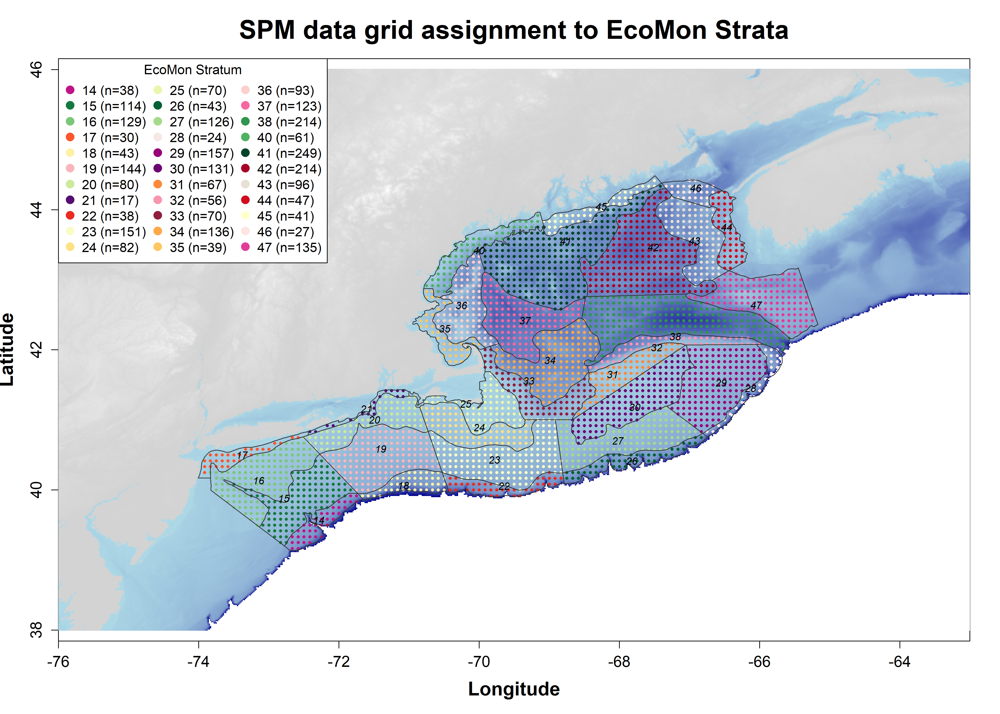

About These Figures
Each figure shows the seasonal cycle of Calanus finmarchicus biomass (g dry weight m−2) within a selected region for a single year, plotted against the full 1999–2024 climatology. Calanus finmarchicus is a small, lipid-rich copepod that forms the base of the Gulf of Maine food web and is a critical prey species for North Atlantic right whales, Atlantic cod, and many other upper trophic level predators.
Data Source
Biomass estimates are derived from species distribution models (SDMs) developed by Fisheries and Oceans Canada (DFO) at the Maurice-Lamontagne Institute (Plourde et al. 2024). The underlying observations come from two long-running transboundary survey programs: DFO’s Atlantic Zone Monitoring Program (AZMP) and NOAA’s EcoMon/MARMAP surveys, spanning the Mid-Atlantic Bight to the Labrador Shelf from 1999 to 2024. Sampling was restricted to late copepodite stages (CIV–CVI), which are the ecologically most relevant stages for higher trophic-level feeding and are comparably retained by both survey gear types.
The SDMs use Generalized Additive Mixed Models (GAMMs) with environmental predictors drawn from the GLORYS12v1 ocean reanalysis at approximately 9 km spatial resolution (0.083° × 0.083°), including upper-layer temperature (0–50 m), water column temperature minimum, and bathymetry. Predicted abundance was converted to dry weight biomass using temperature-dependent body size relationships. While models were fit for all three Calanus species present on the Northeast Shelf (C. finmarchicus, C. glacialis, and C. hyperboreus), only C. finmarchicus is shown here, as it is the dominant species in the Gulf of Maine region. Model output is provided on 10 m vertical depth bins across the Northwest Atlantic. Full methodological details are available in Plourde et al. (2024).
The dataset was assembled by Eve Rioux and Caroline Lehoux at DFO’s Maurice-Lamontagne Institute, who are the primary contacts for data access and updates.
Regional Biomass Indices
The SDM output is a high-resolution 3D gridded product — the figures here distill that into place-based seasonal indices designed to track year-to-year change and provide historical context for any given biomass estimate. This kind of index also allows biomass to be passed forward as a parameter into foraging habitat and ecosystem models.
Grid points are aggregated into two spatial frameworks: NOAA EcoMon survey strata, which follow a stratified random survey design, and a set of CINAR polygons focused on the Bay of Fundy region. The CINAR polygons were defined to align with EcoMon strata boundaries while also reflecting local hydrographic features and regular DFO sampling along the Brown’s Bank Line and at the Halifax Station.
Vertically, the water column is summarized into two layers — Shallow (0–80 m) and Deep (>80 m) — which broadly separate actively feeding copepods near the surface from those undergoing diapause at depth. A total (full water column) layer is also provided. Original model values in mg m−2 are converted to g m−2 for display. Within each spatial polygon, biomass is averaged across all contributing grid points for each month and year.
How to Read the Plot
| Element | Meaning |
|---|---|
| Light grey ribbon | Full historical range (max of mean + SD to min of mean − SD across all years) |
| Dark grey ribbon | Climatological mean ± 1 SD |
| Dashed grey line | Climatological monthly mean |
| Bold orange line + error bars | Selected focus year; error bars show ± 1 SD across grid points within the polygon, reflecting spatial variability |
The number of grid points contributing to each monthly mean is annotated on the figure. Plots are marked “Not Available” when fewer than 22 grid points are present in a given month and depth layer, indicating insufficient spatial coverage for a reliable regional average. It is important to note that the selected data for which the mean is calculated are biomass estimates from the SDM, not observations. Thus, the variability within a time period (month × year) is being driven largely by differences in bathymetry.
Mean bathymetry (± SD) of the grid points within the polygon is shown in the upper-right corner.
Reference
Plourde, S., et al. (2024). Calanus species distribution models and NARW foraging habitat in Canadian waters. DFO CSAS Research Document 2024/039, Quebec Region.